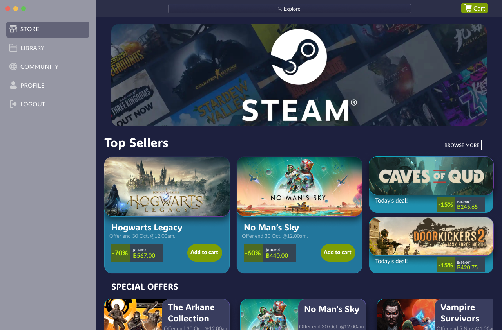
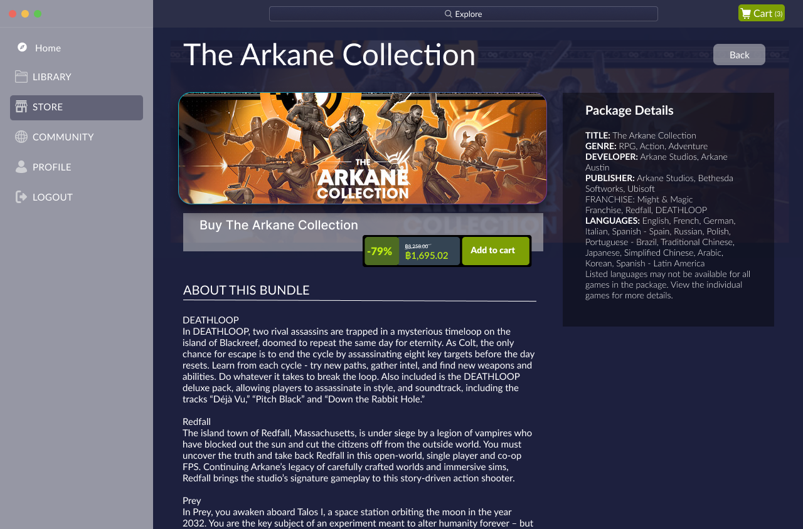
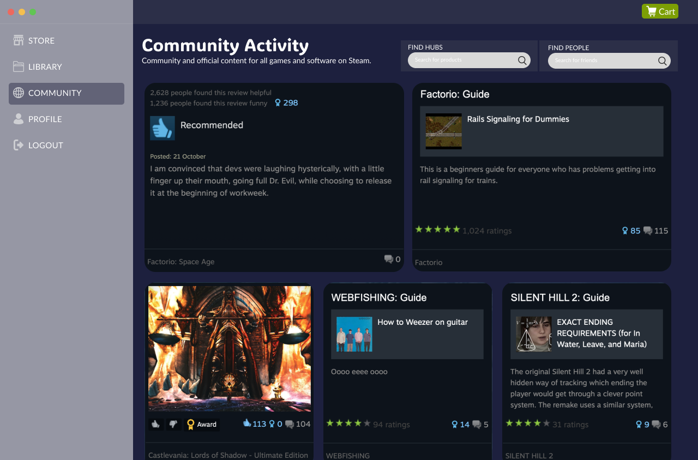
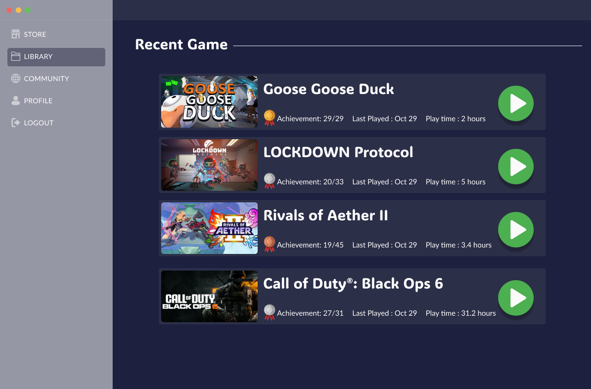
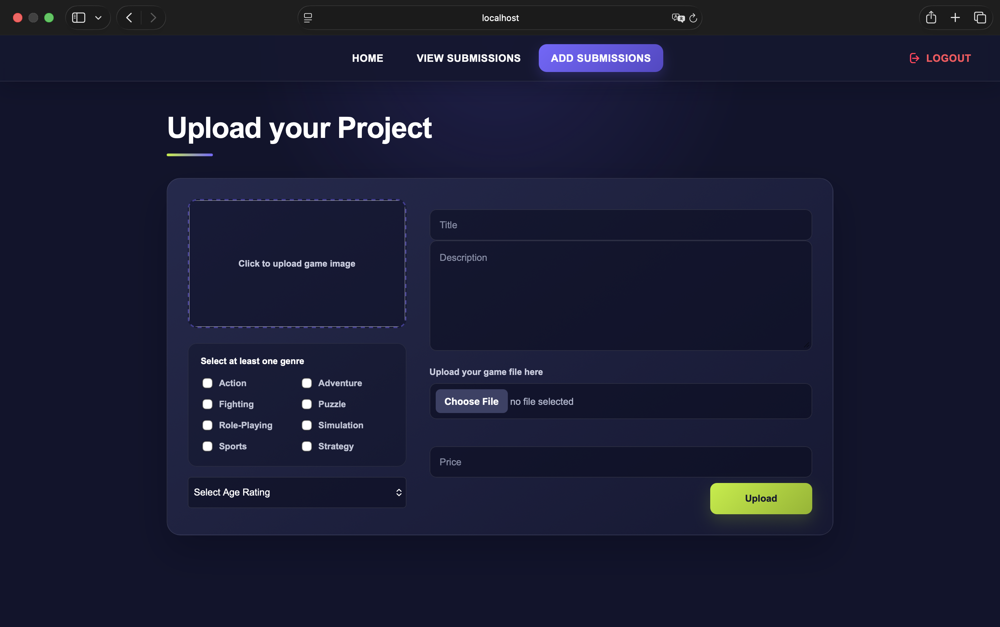

Player
Discovers, purchases, and manages digital games.
- Create and access an account
- Browse game information and offers
- Purchase and access owned games
- Write recommendations and reviews
UI DESIGN · DATABASE DESIGN
A database lab project exploring how players, developers, and administrators interact across one platform.
STEAM is a database laboratory group project that models a digital game distribution platform for players, developers, and administrators. The project combines a proposed user interface with a relational database supporting game discovery, developer submissions, administrative approval, purchasing, ownership, and reviews. A simplified PHP prototype was developed collaboratively by the team to validate the core database workflows.
PROBLEM & OBJECTIVES
A digital game marketplace must manage interconnected data across multiple user roles and workflows. Players purchase and review games, developers submit titles, and administrators evaluate submissions before publication. The challenge was to organize these relationships while keeping the user journey clear and the stored data consistent.
Define clear flows for discovering, purchasing, publishing, and managing digital games.
Translate platform requirements into normalized entities, attributes, and relationships.
Use a collaborative PHP prototype to confirm that the database supports the intended operations.
USERS & REQUIREMENTS
Each user role interacts with different parts of the system while sharing the same relational data.
Discovers, purchases, and manages digital games.
Publishes games through a structured submission process.
Reviews submissions before games enter the store.
USER FLOWS
Each role follows an independent workflow while their actions remain connected through the relational database.
Create Account
Browse Store
Add to Cart
Complete Payment
Access Library
Create Developer Profile
Enter Game Details
Upload Files
Submit for Review
Track Status
Sign In
View Pending Submission
Review Details
Approve or Reject
Publish Game
PROPOSED UI




UI-DATA MAPPING
Select a user role to trace how each screen and action depends on the relational database.
DATABASE DESIGN
The schema organizes accounts, publishing, commerce, ownership, and community activity while preserving relationships across multiple user roles.
Parent Tables
Relational Schema
Loading diagram...
The schema separates submitted and published games, extends user accounts through developer profiles, and resolves many-to-many relationships using associative tables.
FUNCTIONAL PROTOTYPE
A simplified PHP prototype was developed collaboratively to validate the platform's core SQL workflows.

Built to validate database operations rather than final visual fidelity.
CHALLENGES & REFLECTIONS
The project revealed where design ambition, technical scope, and team coordination needed to meet.
Challenge
The proposed interface exceeded the available implementation time.
Trade-off
We prioritized working database flows over matching the high-fidelity design.
Learning
Define a smaller MVP before expanding the visual scope.
Challenge
Multiple roles and many-to-many relationships increased schema complexity.
Trade-off
Associative tables separated responsibilities and reduced duplicated data.
Learning
Map interface actions to database operations earlier.
Challenge
UI, database, and PHP work progressed in parallel under a tight deadline.
Trade-off
The proposed UI and functional prototype were documented as separate outcomes.
Learning
Set ownership, naming conventions, and integration checkpoints early.
Constraints became inputs for better decisions.
Supporting documents for this project.